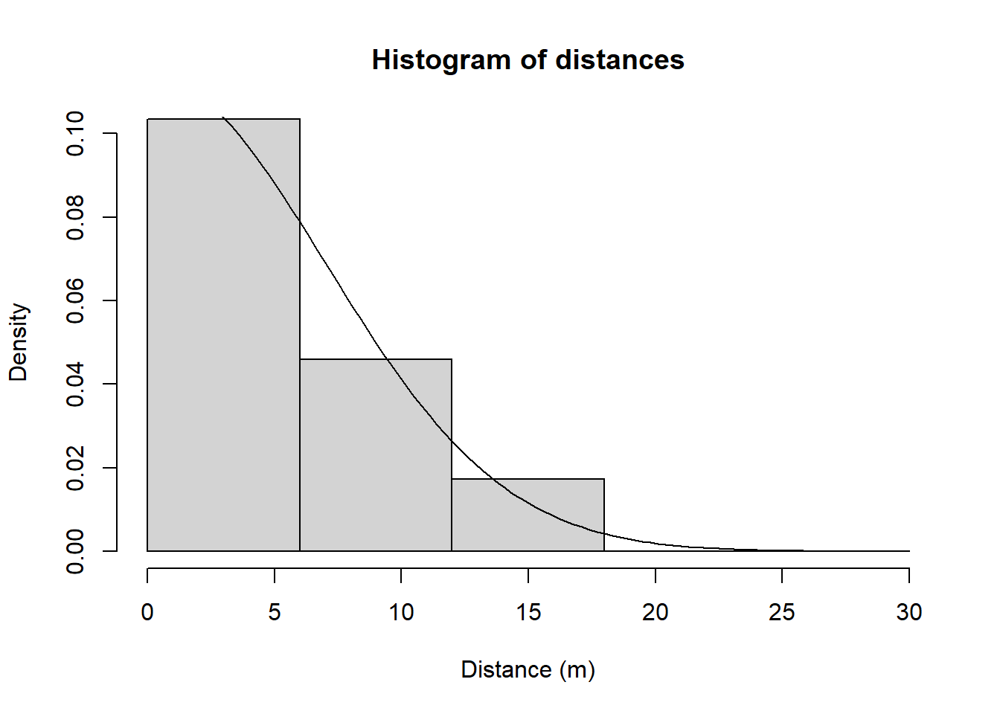
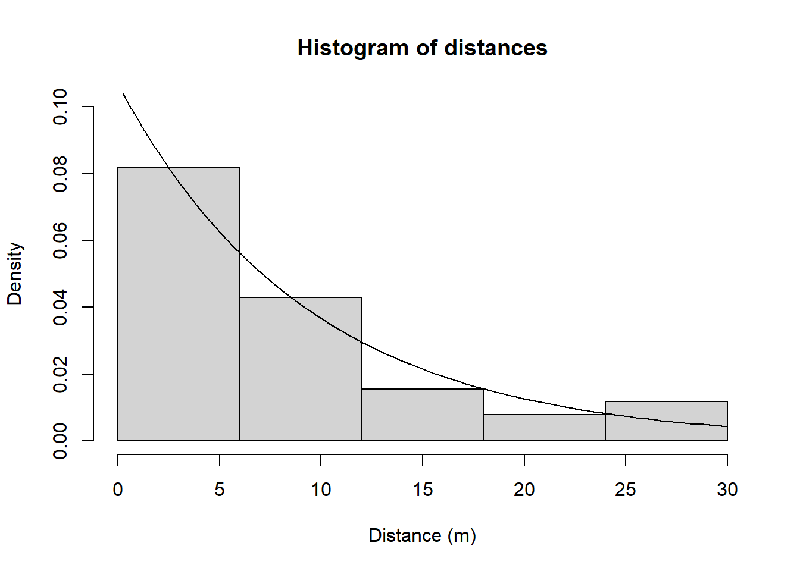
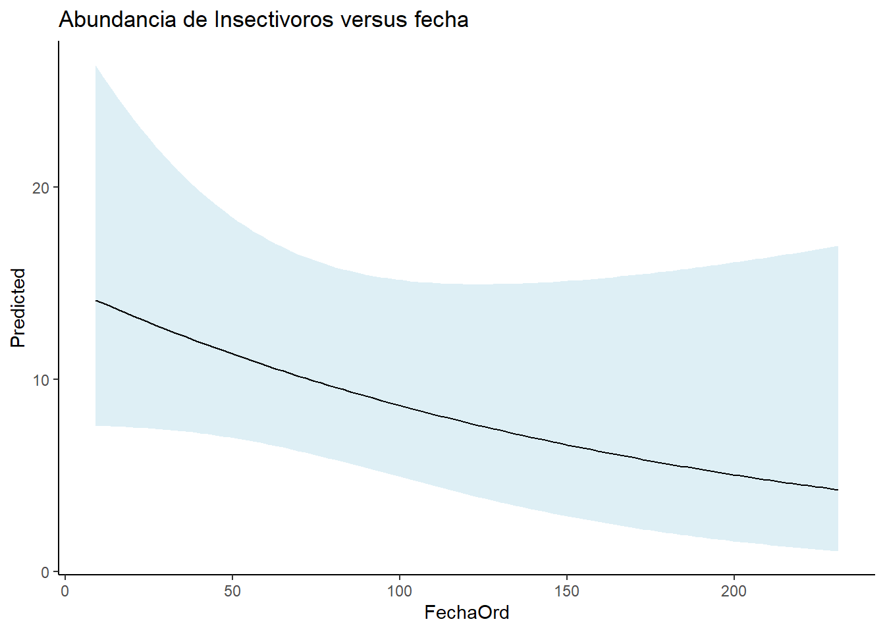

library(unmarked)
library(tidyverse)
library(AICcmodavg)Clase 8- Uso de Unmarked: Estimación de abundancia por transecto
En esta clase, exploraremos el uso de Unmarked para modelar la abundancia de especies a partir de datos recopilados mediante trasectos. Desde los fundamentos, explicaremos paso a paso cómo utilizar este paquete, cubriendo el proceso completo: desde el ajuste inicial del modelo hasta la selección, validación e interpretación de los resultados. También abordaremos la presentación de los datos para su inclusión en publicaciones científicas, asegurando un entendimiento completo y la capacidad de aplicar estos modelos de manera efectiva en contextos de investigación y divulgación científica.
Cargar paquete
Cargar base de datos
library(readxl)
AvesTransecto <- read_excel("data/Transectos.xlsx", sheet = 2)
AvesTransecto <- read.delim("data/Transectos.txt")AvesTransectoLimpia <- AvesTransecto %>%
filter(!is.na(Hora_I))Observar que ave cuenta con mayor cantidad de observaciones
head(AvesTransectoLimpia %>%
group_by(Especie) %>%
count() %>%
arrange(desc(n)))# A tibble: 6 × 2
# Groups: Especie [6]
Especie n
<chr> <int>
1 DIVDIV 25
2 PSAMON 24
3 Ninguna 19
4 PSAWAG 16
5 RAMSUL 13
6 CARPUS 12Filtrar algunas especies insectivoras
Insectivoras <- AvesTransectoLimpia %>%
filter(Especie %in% c("CARPUS", "SETCIT", "SETVIR", "TROAED", "BASCUL", "MIOOLE",
"SETPET", "BASRUF", "MNIVAR", "OREPER", "MYOMIN", "SETPEN", "SETRUT",
"VERCHR", "VERCYA"))
head(Insectivoras) Sitio Tipo_F Punto_Inicial Fecha Visita Hora_I Hora_F Especie
1 F33 DAI DAIC 11/1/2023 3 645 700 VERCHR
2 F33 DAI DAIC 11/1/2023 3 645 700 VERCYA
3 F33 DAI DAIC 11/1/2023 3 645 700 SETPEN
4 F33 DAI DAIC 11/1/2023 3 645 700 SETPET
5 F33 DAI DAIC 11/1/2023 3 645 700 SETRUT
6 F33 DAI DAIC 11/1/2023 3 645 700 MNIVAR
Comportamiento Sustrato Distancia DistanciaBosque Sexo Deteccion Observador
1 Forrageando Dosel 10 20 Visual DM
2 Forrageando Dosel 10 20 Visual DM
3 Forrageando Dosel 10 20 Visual DM
4 Forrageando Dosel 10 20 Visual DM
5 Forrageando Dosel 10 20 Visual DM
6 Forrageando Dosel 10 20 Visual DM
Observaciones
1
2
3
4
5
6 table(Insectivoras$Distancia)
5 10 12 13 15 20 23 25 30 35
4 17 1 1 9 4 1 1 2 1 Crear intervalos de distancias
Insectivoras2 <- Insectivoras %>%
mutate(Distance_Level = cut(Distancia, breaks = c(0, 10, 15, 20, 25, 35),
labels = c("Level1", "Level2", "Level3", "Level4", "Level5")))
table(Insectivoras2$Distance_Level)
Level1 Level2 Level3 Level4 Level5
21 11 4 2 3 Obtener valores de abundancia por Nivel de distancia
Insectivoras3 <- Insectivoras2 %>%
group_by(Sitio, Fecha, Visita, Hora_I, Hora_F, Observador, Distance_Level) %>%
summarise(Abundacia = n() ) `summarise()` has grouped output by 'Sitio', 'Fecha', 'Visita', 'Hora_I',
'Hora_F', 'Observador'. You can override using the `.groups` argument.Insectivoras4 <- Insectivoras3 %>%
pivot_wider(names_from = Distance_Level, values_from = Abundacia, values_fill = 0) %>%
select(Sitio, Fecha, Visita, Hora_I, Hora_F, Observador,
Level1, Level2, Level3, Level4, Level5) %>%
mutate(Fecha = dmy(Fecha)) %>%
mutate(FechaOrd = yday(Fecha))y <- cbind(Insectivoras4$Level1, Insectivoras4$Level2,
Insectivoras4$Level3, Insectivoras4$Level4,
Insectivoras4$Level5)
SiteCovs <- Insectivoras4[,c(4,12)]
Insectivoras4$Longitud <- c(100)
InsectivorasUMF <- unmarkedFrameDS(y= y ,
siteCovs = SiteCovs,
dist.breaks = seq(0, 35, by= 6),
survey = "line",
unitsIn = "m",
tlength = Insectivoras4$Longitud)fmp1 <- distsamp(~ 1 ~ 1, InsectivorasUMF)
fmp2 <- distsamp(~ 1 ~ FechaOrd, keyfun = "halfnorm", output = "density", unitsOut = "ha", InsectivorasUMF)
fmp3 <- distsamp(~ 1 ~ FechaOrd, keyfun = "hazard", output = "density", unitsOut = "ha", InsectivorasUMF)
fmp4 <- distsamp(~ 1 ~ FechaOrd, keyfun = "exp", output = "density", unitsOut = "ha", InsectivorasUMF)
fmp5 <- distsamp(~ 1 ~ FechaOrd, keyfun = "uniform", output = "density", unitsOut = "ha", InsectivorasUMF)
fmp6 <- distsamp(~ 1 ~ FechaOrd + I(FechaOrd^2), keyfun = "exp", output = "density", unitsOut = "ha", InsectivorasUMF)Modelos <- list(fmp1, fmp2, fmp3, fmp4, fmp5, fmp6)
Nombres <- c("fmp1", "fmp2", "fmp3", "fmp4", "fmp5", "fmp6")
aictab(Modelos, Nombres, sort = TRUE)
Model selection based on AICc:
K AICc Delta_AICc AICcWt Cum.Wt LL
fmp4 3 163.05 0.00 0.60 0.60 -77.86
fmp3 4 165.18 2.13 0.21 0.81 -77.41
fmp1 2 166.42 3.37 0.11 0.92 -80.89
fmp2 3 167.02 3.97 0.08 1.00 -79.84
fmp5 2 186.94 23.88 0.00 1.00 -91.15
fmp6 4 797.70 634.65 0.00 1.00 -393.67fitstats <- function(Mod_global2) {
observed <- getY(Mod_global2@data)
expected <- fitted(Mod_global2)
resids <- residuals(Mod_global2)
sse <- sum(resids^2,na.rm=TRUE)
chisq <- sum((observed - expected)^2 / expected,na.rm=TRUE)
freeTuke <- sum((sqrt(observed) - sqrt(expected))^2,na.rm=TRUE)
out <- c(SSE=sse, Chisq=chisq, freemanTukey=freeTuke)
return(out)
}
(pb <- parboot(fmp4, fitstats, nsim=100, report=1))
Call: parboot(object = fmp4, statistic = fitstats, nsim = 100, report = 1)
Parametric Bootstrap Statistics:
t0 mean(t0 - t_B) StdDev(t0 - t_B) Pr(t_B > t0)
SSE 53.7 14.95 9.18 0.0693
Chisq 128.0 20.86 19.97 0.1287
freemanTukey 31.3 2.53 3.75 0.2574
t_B quantiles:
0% 2.5% 25% 50% 75% 97.5% 100%
SSE 19 25 32 39 45 55 72
Chisq 64 77 92 105 118 152 167
freemanTukey 19 21 26 29 31 36 37
t0 = Original statistic computed from data
t_B = Vector of bootstrap samplescHat_pb <- pb@t0[2] / mean(pb@t.star[,2])
MigGOF <- Nmix.gof.test(fmp4, nsim = 100, report = 3)
summary(fmp4)
Call:
distsamp(formula = ~1 ~ FechaOrd, data = InsectivorasUMF, keyfun = "exp",
output = "density", unitsOut = "ha")
Density (log-scale):
Estimate SE z P(>|z|)
(Intercept) 2.6962 0.34164 7.89 2.98e-15
FechaOrd -0.0054 0.00389 -1.39 1.65e-01
Detection (log-scale):
Estimate SE z P(>|z|)
2.24 0.218 10.3 1.05e-24
AIC: 161.7185
Number of sites: 22
optim convergence code: 0
optim iterations: 138
Bootstrap iterations: 0
Survey design: line-transect
Detection function: exp
UnitsIn: m
UnitsOut: ha confint(fmp4, type = "state", level= 0.95) 0.025 0.975
lam(Int) 2.02660821 3.365831755
lam(FechaOrd) -0.01303196 0.002227482exp(coef(fmp4, type="state", altNames=TRUE)) lam(Int) lam(FechaOrd)
14.8235923 0.9946123 hist(fmp4, ylim = c(0, 0.1), xlab="Distance (m)") # Only works when there are no det covars
FechaOrd <- data.frame(FechaOrd = seq(min(Insectivoras4$FechaOrd, na.rm = TRUE), max(Insectivoras4$FechaOrd, na.rm = TRUE), length.out = 100))
FechaOrd_pre <- predict(fmp4, newdata = FechaOrd, type = "state")
FechaOrd_pre$FechaOrd <- FechaOrd$FechaOrdggplot(data = FechaOrd_pre, aes(x= FechaOrd, y= Predicted))+
geom_ribbon(aes(ymin = lower, ymax= upper),
fill = "lightblue", alpha = 0.4)+
geom_line()+
labs(title = "Abundancia de Insectivoros versus fecha")+
theme_classic()